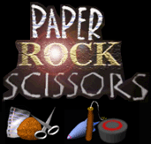

I had a wonderful time making this game! The idea for Paper Rock Scissors 2000 came to me one day while I was trying to imagine a strategy game that would be incredibly simple for anyone to learn and play.
( My experience with playing strategy games up until this point had been largely filled with frustration, e.g. BattleTech with its complex rule-systems and tedious table look-ups )
The first thing that came to mind was Paper, Rock, Scissors, that classic game we all discovered in our youth, whether on a playground or some road trip. I thought it would be a nifty well-balanced game mechanic to exploit. However, I had to overcome the hurdle of randomization, since that didn’t lend itself well to strategy (although today some would beg to differ. ) I solved this concern by establishing a deck of pre-ordered game pieces which players would draw from.

In essence PRS 2000 is a tile-based strategy game where each turn a player is presented with a random game piece (paper, rock or scissors) that they must drop onto the playing field. When a piece is dropped, the canonical rules of Paper, Rock, Scissors are applied against adjacent tiles, resulting in a zero-sum victory for the player or opponent. To accomplish this, defense is preemptively handled first. For example, if a blue player drops a rock on the board next to a red player’s scissors and paper, then the red player will score the victory flag (since their red paper would initially defeat the blue rock.) Each turn a player drops their piece and as gameplay progresses, the board eventually fills up, making players think more carefully about where to drop their remaining pieces. The winner is the player with the most victory flags at the very end (after no more open tiles are left.)
I coded the original prototype of this game as 2-player DOS application, but later I rewrote it as a Win32 application. Eventually, I added single-player mode (CPU follows a weighted-sum strategy) as well as two-player networking mode over TCP/IP. To make the game more attractive for long-time strategy enthusiasts, I added optional game pieces (dynamite, nukes, land mines, and treasure chests)
For the graphics I modeled the pieces in 3D with Amorphium then touched them up with a pixel editor.

Special Thanks to my good friend Will McWhorter who composed the theme music. He even made a version with vocals!